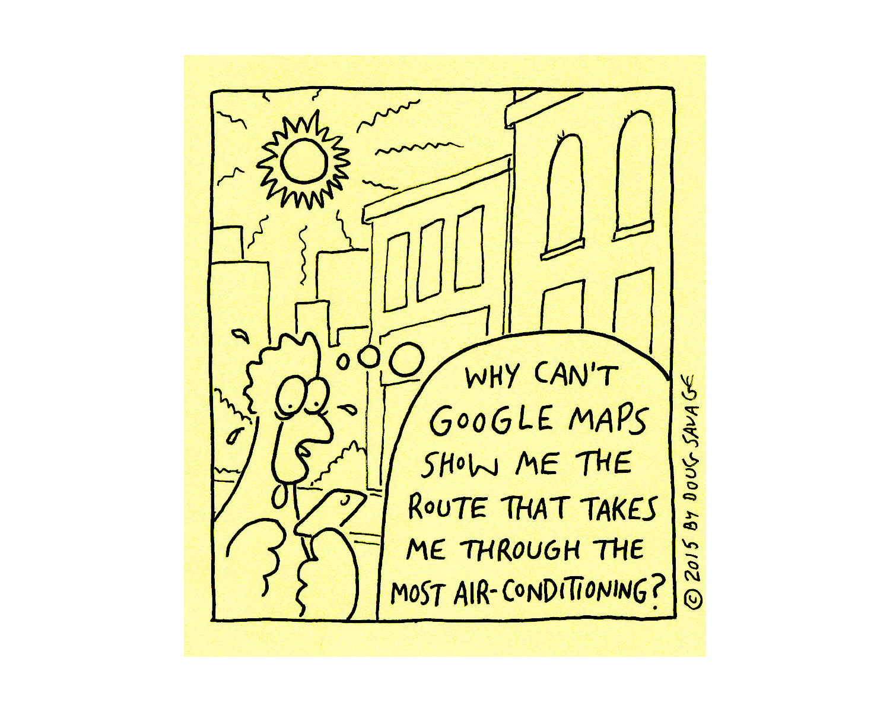

Good afternoon and thank you for your presence.
I'm Júlio Luta and I'll be presenting the article "Combining integration with walking conditions in urban routes:
development of a test model".
Introduction
I'll talk about the motivations for this work and how the presentation is structured.

Current route generators already provide help for pedestrians regarding time estimating. However, routes often matter more than just the time to be travelled and each person has different personal motivations and physical conditions.
Walking conditions
Personal motivations
Route generation
New outputs
We will consider slope, sun exposition, and integration as walking conditions to route generation, all to address different and possible personal motivations and physical limitations. We used integration as an possibility, not to take a side in closeness vs betweenness.
Building the model
Testing the model
Results
Conclusions
Next I'll show how we built the model
Building the model
Step by step how we built the model.
Pedestrian travel network
We used as base a previously developed model of a pedestrian travel network (Gonçalves et al., 2015) and added several characterization aspects to the already digitized footpaths using a GIS application.
Having access to a previously developed model of a pedestrian travel network, we started from it and added several characterization aspects to this network using ArcGIS.
Existing pedestrian travel network
Shown here the mentioned pedestrian network that uses sidewalks, crosswalks and other pedestrian paths instead of the road network.
Pedestrian
The pedestrian crossings are divided into: signalized, zebra and informal crossings.
Pedestrian crossings
Here are highlighted the pedestrian crossings.
Digital terrain model
A digital terrain model is needed to add elevation to the network .
A digital terrain model is needed to add elevation to the network, which is necessary to calculate the slope and walking speed.
Elevation points
Here shown the elevation points used to create the terrain model.
Contour and cliff lines
And here in red the used countour lines and in green some examples of cliff lines.
Created digital terrain model
The raster file was created in ArcGIS and is visible here.
Footpaths’ slope
After adding elevation to the network the footpaths' slope was calculated.
After adding elevation to the network the footpaths' slope was calculated which allows us to continue characterizing the network.
Slope [%]
In this example we have the graphical representation of the pedestrian network according to its slope - measured in percentage and translated in slope intervals.
Walking speed
The walking speed was calculated according to the slope, using Tobler’s equation (1993). Additionally, the speed for walking up and down stairs was calculated following Fruin’s work (1987).
In the next step, to calculate the walking speed we used the Tobler equation that considers any slope. For a null slope the result of the equation is close to the values found in several sources.
Pedestrian physical effort
In terms of speed, slope, or both it is possible to estimate the oxygen consumption, which allows the calculation of calorie expenditure .
In terms of speed, slope, or both it is possible to estimate the oxygen consumption, which allows the calculation of calorie expenditure. To calculate the calories an equation was estimated using the findings of Yamazaki and colleagues.
Buildings and shading modelling
To represent summer and winter , one day for each season was modelled.
To represent summer and winter, one day for each season was modelled.
Modelled buildings
The modelled buildings are limited to part of the network's area. To the North by Avenida Elias Garcia and Avenida de António José de Almeida, the West by Rua Marquês Sá da Bandeira, to the South by Rua Tomás Ribeiro, Rua Almirante Barroso and Rua Pascoal de Melo, and the East by Avenida Almirante Reis.
Modelled shading - winter 11h
For the day representing the winter, the shading was created for five instants of the day and for summer six were created.
Shaded footpaths
In the sun, partially and fully shaded footpaths were identified.
For each moment of the day the partially and fully shaded footpaths and the ones in the sun were identified.
Shaded footpaths for winter 11h sun partial shade
As an example, the shading for winter at 11h. In yellow the segments in the sun, in white the shaded ones and in grey the partially shaded.
Integration
Axial lines were used in DepthMap to create a segment analysis which used the following radius: n, 1200m, 800m and 400m. The segments and its values were imported into the GIS application.
To add integration to the model, axial lines were used in DepthMap to create a segment analysis which used the following radius: n, 1200m, 800m and 400m. The segments and its values were imported into the GIS application and were associated with the built pedestrian network.
Segments - Integration R1200m
Here the segment analysis for a three kilometer radius area centered in Saldanha.
Pedestrian Network - Integration R1200m
Using the segments analysis, the pedestrian network had the integration values associated using angle and distance spatial relationships.
Route generation
At least two locations must be added, representing the starting point and destination .
The pedestrian routes may be generated according to the integration, distance or time.
To generate the routes we used ArcGIS Network Analyst.
Testing the model
Three different sets of tests were carried out as a proof of concept of how the model should be validated in the future.
Walking time
The generated routes' walking time was compared with Google Maps’ (2017) walking time.
For several routes the walking time was compared with Google Maps’ walking time. From all routes generated in the case studies, 20 unique ones were identified and created in Google Maps, using when necessary additional destinations to force the route’s geometry.
Energy expenditure
The model’s energy expenditure results were compared with the results of two different commercial solutions, Samsung Gear Fit smartwatch and MapMyWalk (2017) fitness tracking application.
The model’s energy expenditure results were compared with the results of two different commercial solutions, Samsung Gear Fit smartwatch and MapMyWalk fitness tracking application.
Shading
To compare the shading measures no other model or application was found, and therefore the model results were validated on site.
To compare the shading measures no other model or application was found, and the model results were validated on site with several visits to distinct locations at different times.
Results
The results are divided in two case studies.
First case study
The first case study will provide some insights about the incremental use of the calculated values and will demonstrate the slope consequences on the route generation.
The first case study will provide some insights about the incremental use of the calculated values and will demonstrate the slope consequences on the route generation.
Alameda Subway and Civil Pavilion entrances
Visible here the two locations representing the starting point in Alameda and the destination in Instituto Superior Técnico.
Alameda-Civil, ignoring slopes: 658m 470s
The first route was created ignoring slope effect on walking speed.
Factoring slopes: 658m 575s +105s 154ml/kg 54kcal
The second route considered the slope effect and it has the same shape, but this one takes about 10 minutes. The expected oxygen consumption and energy expenditure are visible. 54 kilocalories
Factoring slopes and stairs: +42m 595s +20s 153ml/kg 54kcal
The third route considered slope and stair effects and has a different shape shown in orange. It's 42 meters and 20 seconds longer than the previous one shown in blue.
Factoring slopes, stairs and crossings: +15s 153ml/kg 54kcal
To calculate the fourth route, pedestrian crossings were added, with the correspondent time penalty. This adds 15 seconds.
Reversed: -124s 111ml/kg -42ml/kg 39kcal -15kcal Reversing the starting point and destination the same route is generated but the time drops to eight minutes, as the walking speed is higher going down hill on the same path.
Stairs prohibited, heavily avoid slopes higher than 8%: +176m 738s +128s 186ml/kg +33ml/kg 65kcal +11kcal To demonstrate other slope consequences a route was generated where stairs are prohibited and slopes higher than 8% are heavily penalized - the model tried to avoided them.
Stairs and slopes higher than 9% prohibited: 1326m +626m 1053s +443s 269ml/kg +116ml/kg 94kcal +40kcal If instead of adding penalties these slopes are prohibited the model cannot find a route. But changing the threshold to 9% a solution is found.
Routes created by Google Maps (2017)
The fastest route created by Google Maps is not given as a solution in our model. This route uses informal pedestrian crossings which are not modelled, since not only they would be too close to existing pedestrian crossings, but can also be considered dangerous.
Second case study
Several routes were created, between Avenida Conde Valbom and Jardim Cesário Verde, using as restrictions the shading and later the integration.
In the second case study several routes were created using as restrictions the shading and later the integration.
Conde Valbom-Estefânia: 1185m 896s 219ml/kg 76kcal
The first route was generated considering the slope, stair, and pedestrian crossings effects and is used to benchmark the remaining routes
Winter 09h sun partial shade 1213m +28m 914s +18s 224ml/kg +5ml/kg 78kcal +2kcal
For winter routes the shaded footpaths were moderately penalized. This first route, shown in red, is for 9am.
Heavily penalized winter 09h: 1312m +127m 1008s +112s 243ml/kg +24ml/kg 85kcal +9kcal
To simulate situations where the shade in winter is to be avoided at higher costs, a new route for 9am was generated with increased penalties.
Winter 11h sun partial shade 1232m +47m 946s +50s 228ml/kg +9ml/kg 80kcal +4kcal
Keeping the original penalty at 11am a new route is generated.
Winter 13h sun partial shade 1205m +20m 920s +24s 222ml/kg +3ml/kg 78kcal +2kcal
At 1pm a route is generated that goes through the sunny Praça Duque de Saldanha.
Winter 15h sun partial shade 1295m +110m 984s +88s 241ml/kg +22ml/kg 84kcal +8kcal
At 3pm the sun is sought on the east sidewalk of Avenida da República.
Winter 17h sun partial shade 1185m 896s 219ml/kg 76kcal
At 5 pm there are no changes to the initial route since most of the network has no sun.
Summer 09h sun partial shade 1303m +118m 990s +94s 242ml/kg +23ml/kg 85kcal +9kcal
Summer 11h sun partial shade 1229m +44m 930s +34s 228ml/kg +9ml/kg 80kcal +4kcal
Summer 13h sun partial shade 1242m +57m 934s +38s 229ml/kg +10ml/kg 80kcal +4kcal
Summer 15h sun partial shade 1223m +38m 927s +31s 225ml/kg +6ml/kg 79kcal +3kcal
Summer 17h sun partial shade 1217m +32m 917s +21s 225ml/kg +6ml/kg 79kcal +3kcal
Summer 19h sun partial shade 1235m +50m 942s +46s 228ml/kg +9ml/kg 80kcal +4kcal
Least Integrated: 1265m 1009s 81kcal 338 avg. integration Most Integrated: 1214m 941s 78kcal 402 avg. integration
The 1200m value for the integration radius is chosen due to its proximity to the length of these routes. Each route’s integration is calculated as a weighted average of all included footpaths and this value is used to generate the route.
Achievements:
.Walking conditions
.Personal motivations
.New routes and outputs
.Testing
We used integration, slopes and sun exposition as walking conditions.
Future work:
.Integration
.Shading
.Crosswalks
.Energy expenditure
.Model validation
We only explored starting ideas and surely integration values can be used in additional and different ways in the route creation algorithm, identifying and testing them should be considered as future work, as should identifying the users motivations behind these metrics.
Thank you for your attention
julio.luta@tecnico.ulisboa.pt